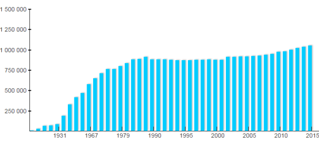
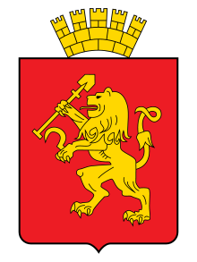

Сибирский город миллионник
Главная
Красноя́рск (произношение (инф.)) — один из крупнейших городов России, крупнейший культурный, образовательный, экономический и промышленный центр Центральной и Восточной Сибири.
Административный центр Красноярского края (второго по площади субъекта Российской Федерации) и городского округа город Красноярск. Центр Восточно-Сибирского экономического района. Красноярск неофициально именуют столицей Сибири.
Общая площадь Красноярска - 354 квадратных километра. Территория города лежит на двух берегах Енисея в своеобразной котловине, которая сформирована северными отрогами Восточно-Саянских гор. Вокруг Красноярска расположено много гор, сопок, холмов, покрытых тайгой,
сосновых боров. Левобережная половина города расположена на высоком берегу Енисея.
Климат Красноярска Климат местности, где расположен город - умеренно континентальный. Климат сглаживается, так как рядом с городом имеется большой водоём - Красноярское водохранилище, кроме того, через город протекает незамерзающая зимой большая река - Енисей. Большое влияние на климат оказывают и окружающие город горы. Зима холодная, но - малоснежная, часто случаются оттепели.
Динамика изменения численности населения Красноярска (график):
Герб Красноярска - это изображение золотого, стоящего на задних лапах льва, на красном геральдическом щите. Лев держит в передних лапах лопату и серп. Сверху изображена корона.
